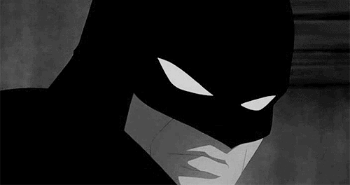
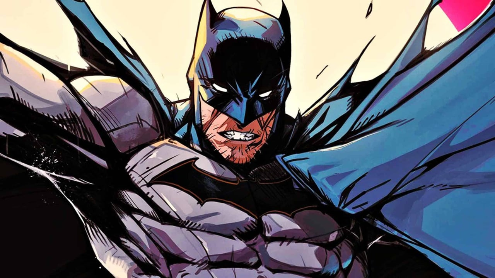

O Batman é um super-herói fictício da DC Comics criado por Bob Kane e Bill Finger em 1939. Sua verdadeira identidade é Bruce Wayne, um bilionário filantropo e proprietário da Wayne Enterprises.
Aqui você encontra alguns dos vilões do Batman:
Uma mistura entre bumerangue e shuriken baseado em lâminas de arremesso. Eles possuem o formato inspirado no símbolo de um morcego.Em algumas versões alternativas, o Batarangue explode, emite eletricidade e raios.
Batman utiliza a Bat-Garra para acessar lugares altos.Em diversas situações, o Cavaleiro das Trevas pode utilizar a arma para puxar criminosos em sua direção.
Usada pra proteger Bruce Wayne de gases e outros produtos tóxicos, além de permitir que ele seja capaz de respirar debaixo d'água.A máscara se encaixa na abertura do capuz.
Batman utiliza granadas de diversos tipos para tomar vantagem em batalha. Ex:Fumaça, Sônicas e Luz.
Batman, também conhecido pelas alcunhas Homem-Morcego, Cavaleiro das Trevas, Cruzado Encapuzado e Maior Detetive do Mundo,[1] é uma personagem fictícia e super-herói da editora norte-americana DC Comics, criado pelo escritor Bill Finger a partir dos esboços do desenhista Bob Kane, aparecendo pela primeira vez na revista Detective Comics #27 (maio de 1939) com o nome "Bat-Man". A identidade secreta do Batman é Bruce Wayne, um bilionário americano, playboy, magnata de negócios, filantropo e dono da corporação Wayne Enterprises. Depois de testemunhar o assassinato dos seus pais enquanto criança, Wayne jurou vingança com um ideal de justiça contra os criminosos. Wayne, então, treina física e intelectualmente e cria uma persona inspirada no morcego para combater o crime.[2] Batman opera na cidade fictícia Gotham, sendo ajudado por seu mordomo Alfred Pennyworth, o comissário de polícia Jim Gordon e diversos aliados vigilantes, sendo Robin seu parceiro mais recorrente. Ao contrário da maioria dos super-heróis, Batman não tem superpoderes; assim, na sua guerra contra o crime, utiliza seu intelecto de gênio, sua perícia em artes marciais e sua destreza física — bem como sua riqueza, que lhe garante um arsenal de última geração. Uma grande variedade de vilões compõe a galeria de inimigos do Batman, incluindo o Coringa, seu nêmesis. Batman tornou-se popular assim que foi apresentado, acabando por ganhar a sua própria história em quadrinhos em 1940. Enquanto as décadas progrediram, foram surgindo divergências sobre a interpretação do personagem. No final dos anos de 1960, a série de televisão Batman usava uma estética camp, que continuou a ser associada ao personagem muitos anos após o fim da série. Vários criadores trabalharam no sentido de devolver o personagem às suas raízes sombrias, culminando com The Dark Knight Returns (1986), de Frank Miller, seguido por Batman: The Killing Joke (1988), de Alan Moore, e Arkham Asylum: A Serious House on Serious Earth (1989), de Grant Morrison. Apesar dessa decisão radical, o sucesso cinematográfico Batman da Warner Bros. ajudou a manter o interesse do público no personagem.[3]
Aluno: Davi Felix Ferreira
Aluno: Marcos da Silva Mendonca